Как сделать свою тему
Very Good Downloader · темы оформления: цвета, скругление, шрифт, значки и раскладка окна. Все картинки ниже — настоящие скриншоты программы.
1. С чего начать
- Откройте настройки → оформление. Выберите тему, на основе которой хотите сделать свою (например, «тёмная»).
- Нажмите «создать». Появится копия — своя тема, и она сразу выбрана. В папке тем появится её файл
.json. - Цвета, скругление, шрифт и значки можно менять прямо в программе: щелчок по квадратику цвета открывает пипетку, всё видно сразу.
- Раскладка и форма (навигация сверху или снизу, вид карточек и кнопок, фон-градиент, размер шрифта…) меняются только в файле темы. Нажмите «папка тем» и откройте файл своей темы в Блокноте (правой кнопкой → «Открыть с помощью» → «Блокнот»).
- Сохраните файл (Ctrl+S) — окно обновится само примерно через секунду, если эта тема выбрана. Перезапускать программу не нужно.
%APPDATA%\VeryGoodDownloader\themes\ (вставьте эту строку в адресную строку Проводника).
Одна тема — один файл .json. Новые файлы появляются в списке тем, когда вы его открываете.
Там же лежит _пример — все поля.json — тема со всеми полями и пояснением к каждому, и эта инструкция.2. Как устроен файл темы
Файл темы — текст в формате JSON: пары "поле": значение через запятую внутри фигурных скобок. Достаточно указать только то, что меняете — всё остальное берётся из тёмной темы. Самая маленькая тема:
{
"name": "моя",
"accent": "#ff8a5c"
}- Цвета —
"#rrggbb"(можно коротко"#f80"). Подобрать цвет удобно пипеткой в программе, а код — в любом «color picker» в интернете. - Числа пишутся с точкой:
1.5, а не1,5. Да/нет —true/falseбез кавычек. - Можно писать комментарии:
// до конца строкии/* … */. - Между полями — запятая, после последнего поля запятой нет.
- Параметры раскладки лежат внутри
"layout": { … }.
Пример со всеми полями и пояснениями (этот же файл лежит в папке тем)
// Пример темы Very Good Downloader — все поля с пояснениями.
// Скопируйте файл под своим именем (например «моя.json») в эту же папку и меняйте.
// Можно писать комментарии // и /* */. Поля, которых нет в файле, берутся из тёмной темы,
// так что в своей теме достаточно указать только то, что меняете.
// Цвета — "#rrggbb". Выбрать тему: настройки → оформление → тема.
{
"name": "пример (все поля)", // название в списке тем
"radius": 1.0, // скругление углов: 0 — квадратные, 1 — обычные, до 3 — совсем круглые
"font": "mono", // шрифт: "mono" — моноширинный, "sans" — Segoe UI, "roboto" — Roboto (нет — Segoe UI)
"icons": "line", // значки: "line" — тонкие значки Windows, "symbols" — обычные знаки ↓ ⚙ ☰
"bg": "#000000", // фон окна
"sidebar": "#0b0b0b", // панель навигации
"sidebar_line": "#161616", // край панели навигации
"surface": "#151515", // карточки и кнопки
"surface_hi": "#222222", // наведение, выбранный пункт
"pill": "#1b1b1b", // маленькие кнопки
"border": "#2a2a2a", // рамки
"divider": "#202020", // разделители строк в карточках
"outline": "#1c1c1c", // рамка пустой очереди
"window": "#101010", // всплывающие окна
"field": "#0d0d0d", // поля ввода
"selection": "#444444", // выделение текста
"text": "#e8e8e8", // текст
"text_hover": "#ffffff", // текст при наведении
"muted": "#8c8c8c", // приглушённый текст (подписи)
"faint": "#555555", // бледный текст (подсказки)
"accent": "#f2f2f2", // акцент: главная кнопка, включённый тумблер, прогресс
"accent_hover": "#ffffff", // акцент при наведении
"on_accent": "#000000", // текст на акценте
"toggle_off": "#3a3a3a", // выключенный тумблер
"knob_off": "#9a9a9a", // кружок выключенного тумблера
"knob_on": "#000000", // кружок включённого тумблера
"track": "#2c2c2c", // полоса прогресса (незаполненная)
"ok": "#74d680", // «готово»
"ok_bg": "#101610", // фон зелёных плашек
"err": "#f06e6e", // ошибка
"warn": "#e8b44c", // «внимание»
"warn_bg": "#1d180c", // фон жёлтых плашек
// Раскладка и форма — меняют вид окна целиком. В окне программы не редактируются, только здесь.
"layout": {
"nav": "left", // навигация: "left" — слева, "top" — сверху, "bottom" — снизу
"nav_labels": true, // подписи у значков навигации (false — только значки)
"nav_width": 76, // ширина левой навигации (60–260); от 140 — значок и подпись в строку
"header": "logo", // в навигации: "logo" — значок программы, "name" — значок и название, "none" — ничего
"column": 640, // ширина колонки с содержимым (420–1200)
"cards": "fill", // карточки: "fill" — заливка, "outline" — рамка, "none" — без фона
"shadow": "none", // под карточками: "none", "shadow" — тень, "glow" — свечение цвета акцента
"density": 1.0, // плотность (0.7–1.6): высота строк и кнопок; 0.85 — компактно, 1.25 — просторно
"padding": 1.0, // внутренние отступы (0.5–2.5); при скруглении больше 1 растут сами
"buttons": "pill", // кнопки: "pill" — скруглённые, "rect" — прямоугольные, "outline" — контур, "flat" — плоские,
// "tonal" — как в Material 3: главная залита акцентом, обычные — цветом pill, маленькие — контур
"button_radius": -1, // скругление кнопок в точках (100 — «таблетка» целиком); -1 — по radius
"field_radius": -1, // скругление поля для ссылок в точках (Material 3: 4); -1 — по radius
"nav_indicator": "block", // выбранный пункт навигации: "block" — весь пункт, "pill" — «таблетка» вокруг значка
"switch": "classic", // тумблеры: "classic" или "m3" (крупнее, с рамкой в выключенном виде)
"background": [], // фон-градиент сверху вниз: 2–3 цвета, например ["#0b0820", "#1a0b2e"]; [] — сплошной bg
"background_image": "", // картинка PNG из этой папки поверх фона, например "фон.png"; "" — без картинки
"image_opacity": 0.25, // непрозрачность картинки (0–1)
"font_scale": 1.0, // размер шрифта (0.8–1.4)
"bold_headings": false, // жирные заголовки страниц и разделов
"caps": "lower" // подписи разделов настроек: "lower" — как есть, "upper" — ПРОПИСНЫМИ
}
// Тема на Material 3 — достаточно одного seed-цвета. Уберите // у трёх строк ниже (и запятую
// после закрывающей скобки "layout"): роли M3 выведутся из seed, цвета окна и форма — из ролей,
// а всё, что задано в файле явно, останется как задано. Роли ("scheme") можно указать и вручную —
// имена как в Jetpack Compose ColorScheme: primary, onPrimary, primaryContainer, surfaceContainerLow…
// "m3": {
// "seed": "#6750a4", "dark": true
// }
}
3. Цвета — где какой
Чтобы было видно, какой цвет где используется, каждому цвету здесь дан свой яркий оттенок. Номера на картинках — в таблице.
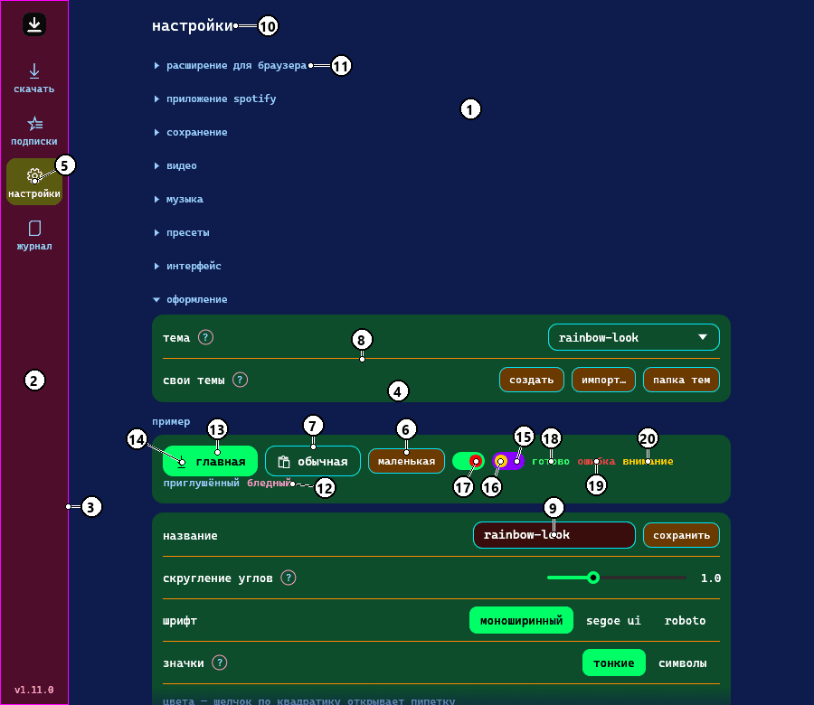
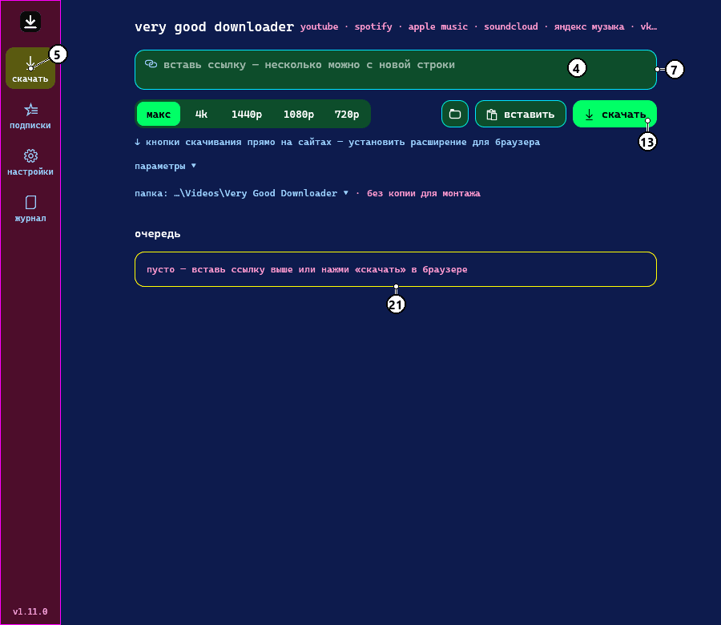
| № | поле | где видно | |
|---|---|---|---|
| 1 | bg | фон окна | |
| 2 | sidebar | панель навигации | |
| 3 | sidebar_line | край панели навигации (линия) | |
| 4 | surface | карточки, поле для ссылок, обычные кнопки | |
| 5 | surface_hi | наведение и выбранный пункт навигации | |
| 6 | pill | маленькие кнопки («маленькая», «сохранить»); у кнопок «tonal» — обычные кнопки и индикатор навигации | |
| 7 | border | рамки кнопок, выпадающих списков, поля для ссылок | |
| 8 | divider | линии между строками в карточках | |
| 21 | outline | рамка пустой очереди на странице «скачать» | |
| — | window | всплывающие окна (выпадающий список, подтверждения) | |
| 9 | field | поля ввода (название темы, ключи) | |
| — | selection | выделение текста мышью | |
| 10 | text | основной текст | |
| — | text_hover | текст при наведении | |
| 11 | muted | подписи разделов, второстепенный текст | |
| 12 | faint | подсказки, бледный текст, номер версии | |
| 13 | accent | главная кнопка, выбранный вариант, включённый тумблер, прогресс | |
| — | accent_hover | главная кнопка при наведении | |
| 14 | on_accent | текст и значок на акценте | |
| 15 | toggle_off | выключенный тумблер | |
| 16 | knob_off | кружок выключенного тумблера | |
| 17 | knob_on | кружок включённого тумблера | |
| — | track | незаполненная часть полосы прогресса и ползунка | |
| 18 | ok | «готово», «подключено» | |
| — | ok_bg | фон зелёных плашек (подсказка про расширение) | |
| 19 | err | ошибки | |
| 20 | warn | «внимание», ожидание | |
| — | warn_bg | фон жёлтых плашек (предупреждение про spotify) |
Цвета без номера на этих двух картинках не видны: они появляются во всплывающих окнах, при наведении, при загрузке или на плашках-подсказках.
text контрастным к bg и surface, а on_accent — к accent. Если тема светлая (фон светлее середины), программа сама переключает служебные элементы (полосы прокрутки, тени) на светлый вид.4. Форма и раскладка — все параметры
Первые три параметра стоят в файле сразу (как "radius"), остальные — внутри "layout": { … }. Под каждым — скриншоты «до» (тёмная тема) и «после» (изменён только этот параметр).
Скругление углов
"radius": 1.0значения: 0 … 3 (дробные можно: 1.5)
Во сколько раз скруглять углы карточек, кнопок и окон. 1 — как в тёмной, 0 — квадратные, 2.5 — почти круглые. Внутренние отступы растут вместе со скруглением, чтобы текст не прилипал к углам. Меняется и в программе ползунком.
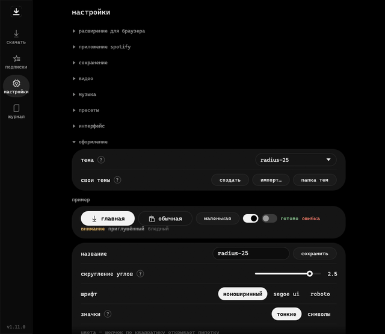
Шрифт
"font": "mono"значения: "mono" — моноширинный (Cascadia Mono / Consolas), "sans" — Segoe UI, "roboto" — Roboto (если не установлен — Segoe UI)
Шрифт всего окна. Меняется и в программе переключателем.
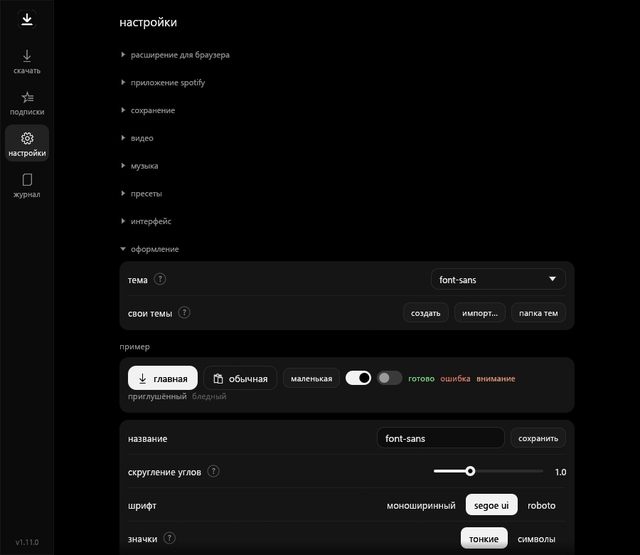
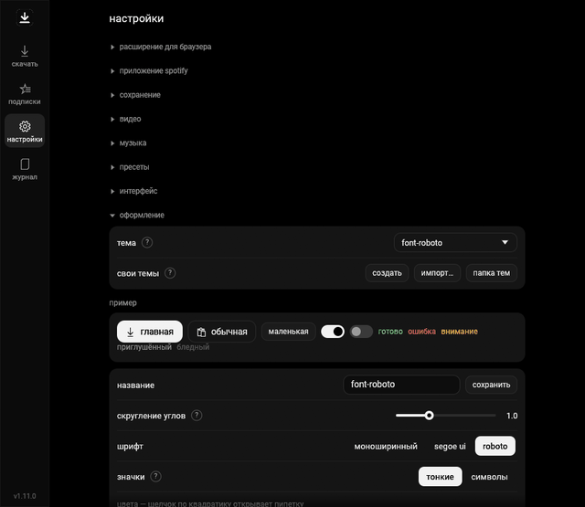
Значки
"icons": "line"значения: "line" — тонкие значки Windows, "symbols" — обычные знаки ↓ ★ ⚙ ☰
Набор значков в навигации и на кнопках.
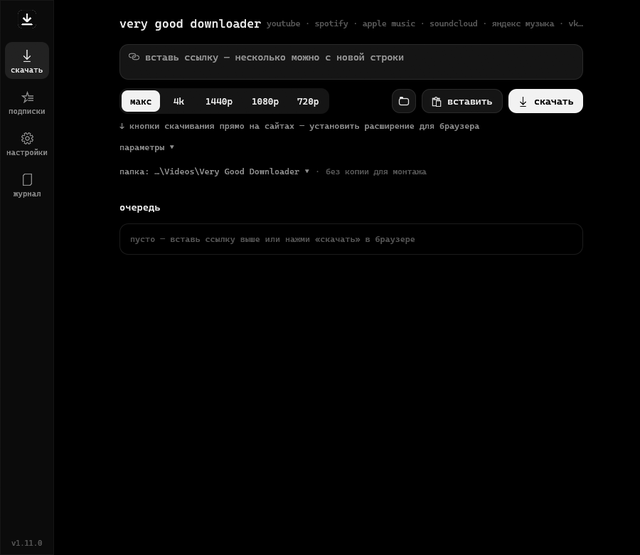
Навигация: где
"layout": { "nav": "left" }значения: "left" — слева, "top" — полосой сверху, "bottom" — полосой снизу
Где стоят «скачать / подписки / настройки / журнал».
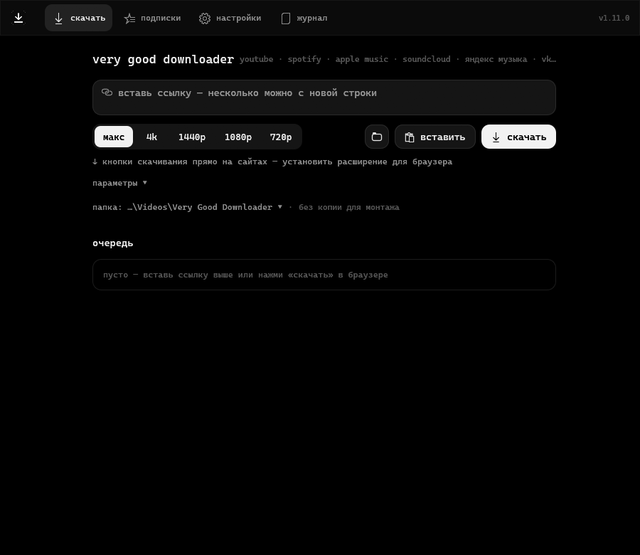
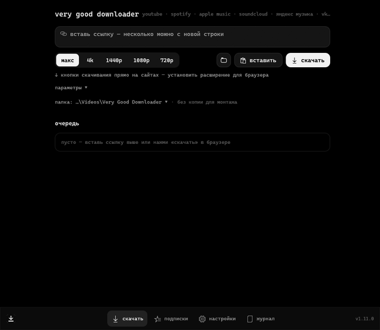
Навигация: подписи
"layout": { "nav_labels": true }значения: true / false
false — только значки (название видно при наведении).
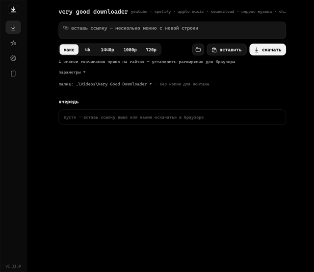
Навигация: ширина
"layout": { "nav_width": 76 }значения: 60 … 260 (только для "left")
Ширина левой панели. От 140 — значок и подпись в одну строку, как в боковых меню.
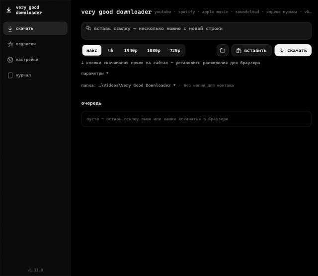
Шапка
"layout": { "header": "logo" }значения: "logo" — значок программы, "name" — значок и название, "none" — ничего
Что стоит в начале навигации. Название видно в широкой левой панели и в полосе сверху/снизу.
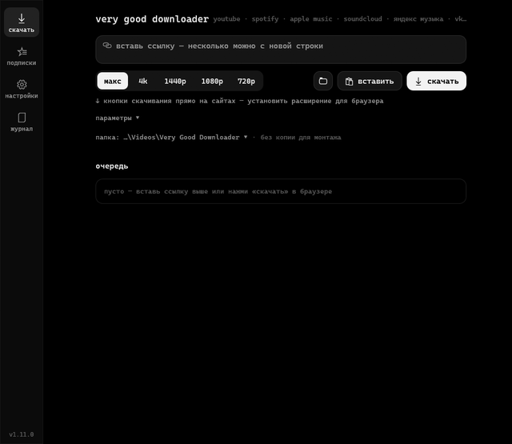
Выбранный пункт навигации
"layout": { "nav_indicator": "block" }значения: "block" — подсвечен весь пункт, "pill" — «таблетка» вокруг значка (как Navigation Rail в Material 3)
Как выделяется открытая страница. Цвет «таблетки» — pill.
Ширина колонки
"layout": { "column": 640 }значения: 420 … 1200
Наибольшая ширина колонки с содержимым по центру окна. Заметно, только если окно шире.
Карточки
"layout": { "cards": "fill" }значения: "fill" — залиты цветом surface, "outline" — полупрозрачные с рамкой border, "none" — без фона
Вид карточек настроек и поля для ссылок.
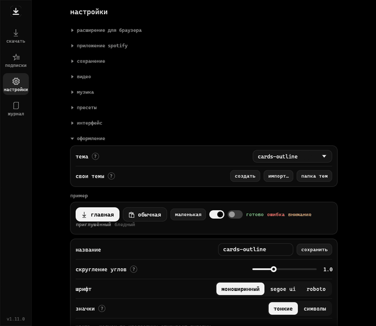
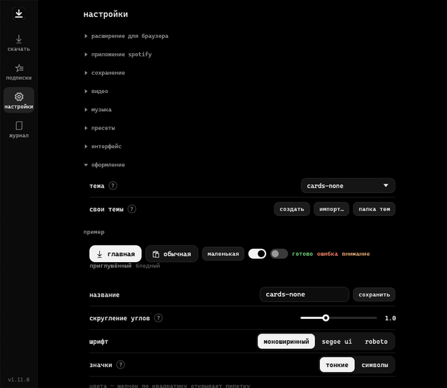
Тень и свечение
"layout": { "shadow": "none" }значения: "none", "shadow" — мягкая тень, "glow" — свечение цвета accent
Под карточками. Тень лучше видна на светлых темах, свечение — на тёмных.
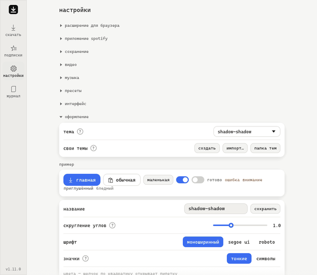
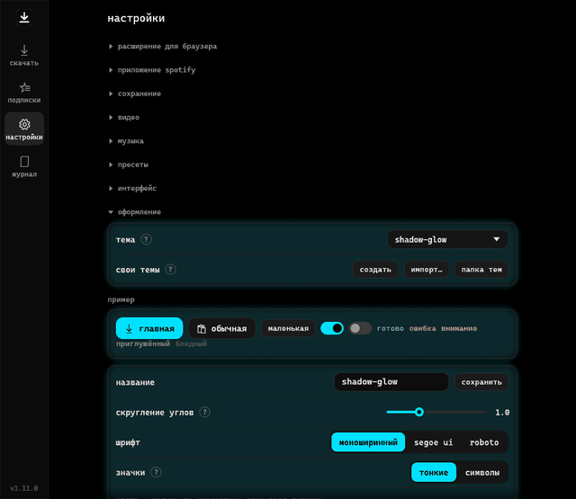
Плотность
"layout": { "density": 1.0 }значения: 0.7 … 1.6
Высота строк и кнопок: 0.8 — компактно, 1.3 — просторно.
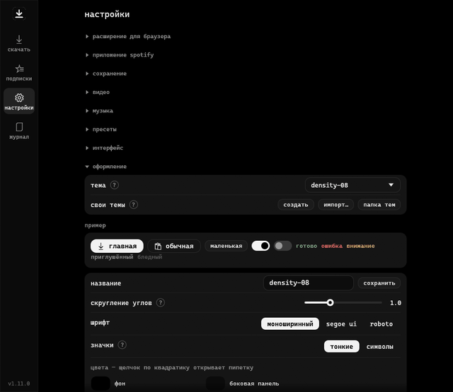
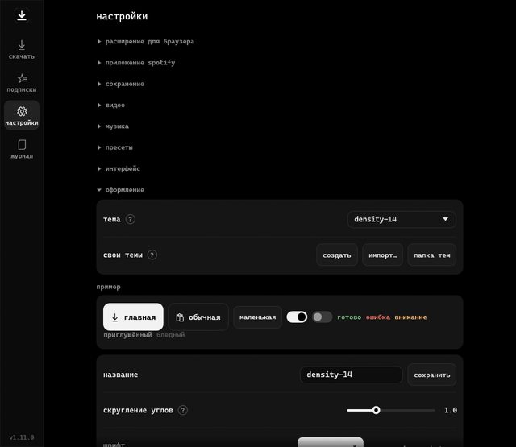
Отступы
"layout": { "padding": 1.0 }значения: 0.5 … 2.5
Внутренние поля карточек и кнопок.
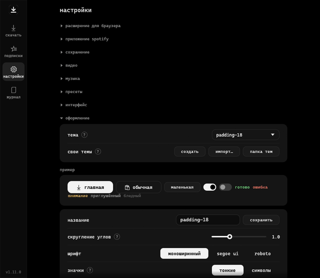
Кнопки
"layout": { "buttons": "pill" }значения: "pill" — скруглённые, "rect" — прямоугольные, "outline" — контур, "flat" — без рамок, "tonal" — как в Material 3 (обычные — цветом pill, маленькие — контуром)
Вид всех кнопок и переключателя вариантов.
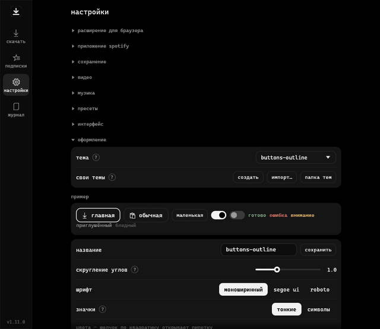
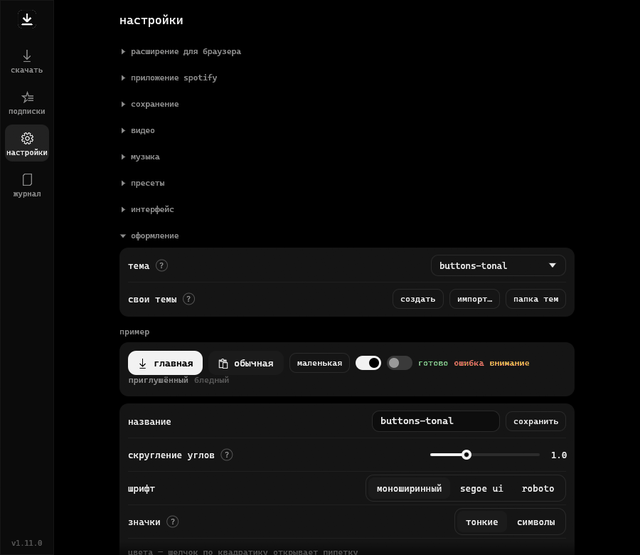
Скругление кнопок
"layout": { "button_radius": -1 }значения: -1 — по radius, 0 … 100 — в точках (100 — «таблетка»)
Отдельно от radius: можно оставить карточки почти квадратными, а кнопки — круглыми.
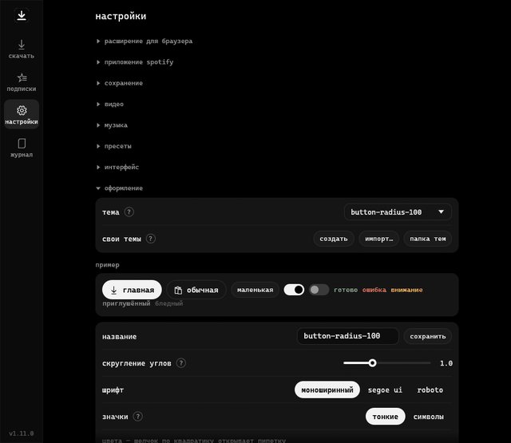
Скругление поля для ссылок
"layout": { "field_radius": -1 }значения: -1 — по radius, 0 … 100 — в точках
Только поле «вставь ссылку».
Тумблеры
"layout": { "switch": "classic" }значения: "classic" — как в тёмной, "m3" — крупнее, с рамкой в выключенном виде (Material 3)
Фон-градиент
"layout": { "background": ["#0d1b4d", "#2b0d4d", "#000000"] }значения: [] — сплошной цвет bg; 2 или 3 цвета — градиент сверху вниз
Рисуется под содержимым (панель навигации остаётся цветом sidebar).
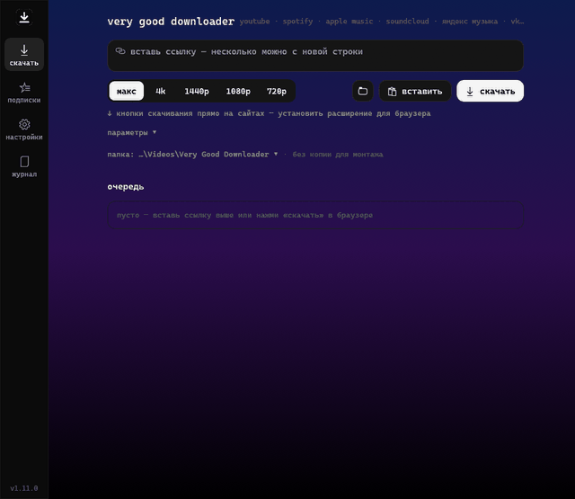
Картинка фона
"layout": { "background_image": "фон.png", "image_opacity": 0.35 }значения: имя PNG-файла в папке тем; непрозрачность 0 … 1
Картинка растягивается на всё окно с сохранением пропорций (лишнее обрезается) и рисуется поверх градиента. Только PNG. Для пробы скопируйте инструкция\фон-пример.png в папку тем и укажите "background_image": "фон-пример.png".
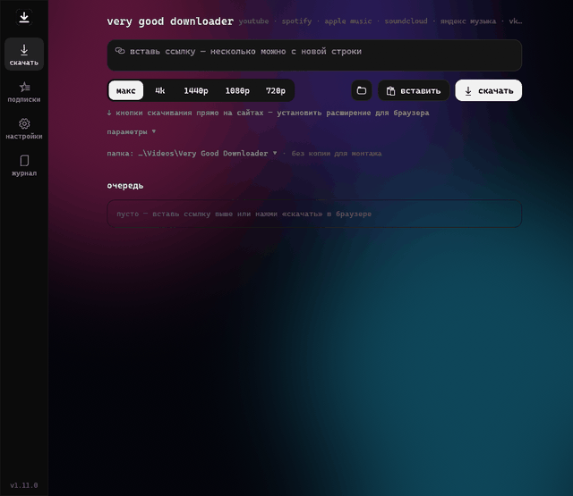
Размер шрифта
"layout": { "font_scale": 1.0 }значения: 0.8 … 1.4
Весь текст и значки. Для масштаба всего окна есть «масштаб» в настройках → интерфейс.
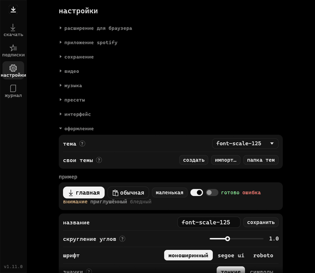
Жирные заголовки
"layout": { "bold_headings": false }значения: true / false
Заголовки страниц и разделов настроек.
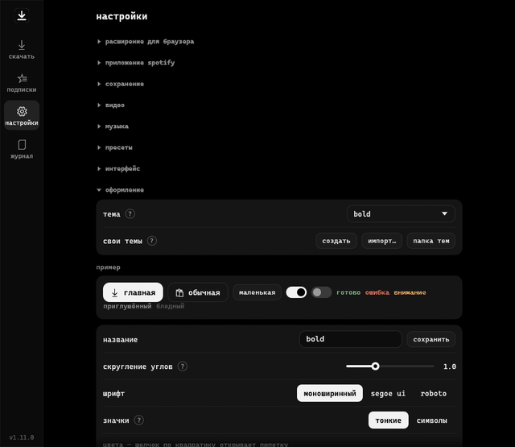
Подписи разделов
"layout": { "caps": "lower" }значения: "lower" — как есть, "upper" — ПРОПИСНЫМИ
5. Рецепты: от нуля до неузнаваемой темы
Рецепт А: «ночной неон» — навигация сверху, градиент, рамки со свечением
Шаг 1. «создать» на основе тёмной, затем в программе пипеткой (или в файле) — тёмно-фиолетовые bg, sidebar, surface и бирюзовый accent "#00e0ff".
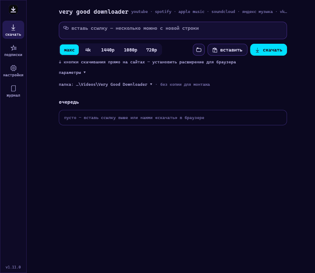
Шаг 2. В файле темы добавьте раздел:
"layout": {
"nav": "top", "header": "name",
"background": ["#0b0820", "#1a0b2e", "#061428"]
}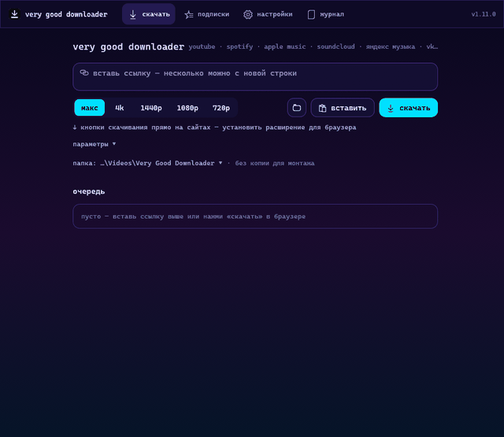
Шаг 3. Дополните раздел layout:
"layout": {
"nav": "top", "header": "name",
"background": ["#0b0820", "#1a0b2e", "#061428"],
"cards": "outline", "shadow": "glow", "buttons": "outline",
"caps": "upper", "bold_headings": true
}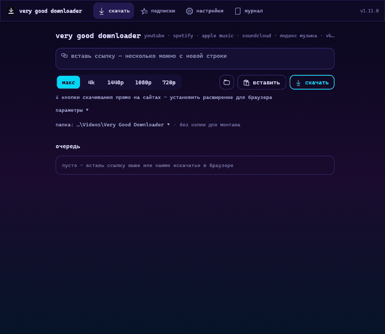
Итог на странице настроек: подписи разделов прописными, жирные заголовки, контурные кнопки.
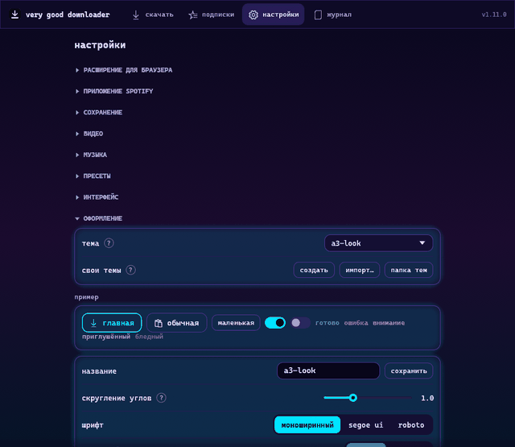
Рецепт Б: «мягкая светлая» — навигация снизу, круглые углы, тени
Шаг 1. «создать» на основе светлой, шрифт — «segoe ui», accent — розовый "#e0457b".
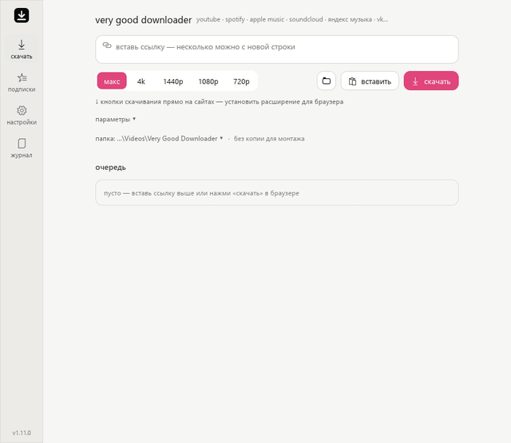
Шаг 2.
"radius": 2.0,
"layout": { "nav": "bottom", "nav_labels": false, "header": "none" }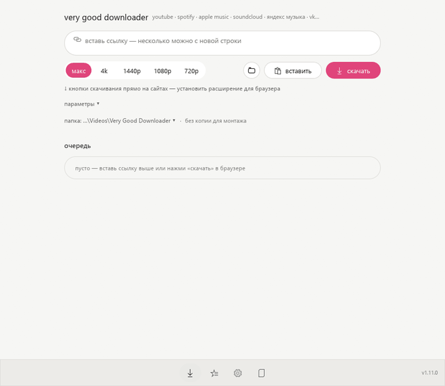
Шаг 3. Тени, плоские кнопки, просторнее и лёгкий градиент:
"radius": 2.0, "bg": "#fdf3f6",
"layout": {
"nav": "bottom", "nav_labels": false, "header": "none",
"shadow": "shadow", "buttons": "flat", "density": 1.15,
"background": ["#fff0f5", "#f0f4ff"]
}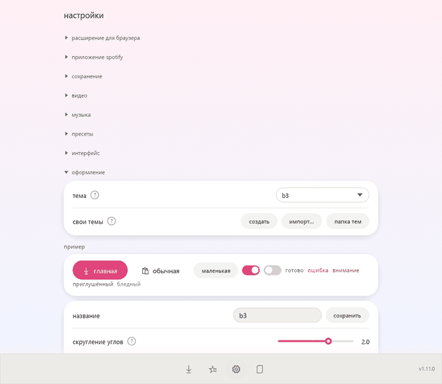
6. Тема из одного цвета (Material 3)
Можно не подбирать 28 цветов вручную: задайте один «seed»-цвет — программа построит по правилам Material Design 3 всю палитру (основной, вторичный, третичный цвета, поверхности, рамки, ошибки) и форму M3: кнопки-«таблетки», навигацию с «таблеткой» вокруг значка, тумблеры M3, шрифт Roboto.
{
"name": "зелёная m3",
"m3": { "seed": "#386a20", "dark": true }
}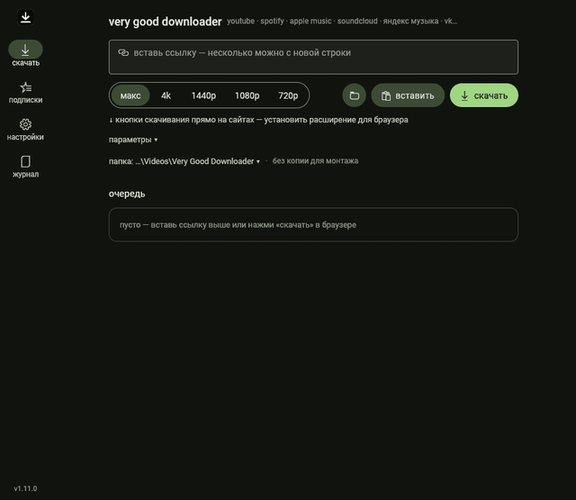
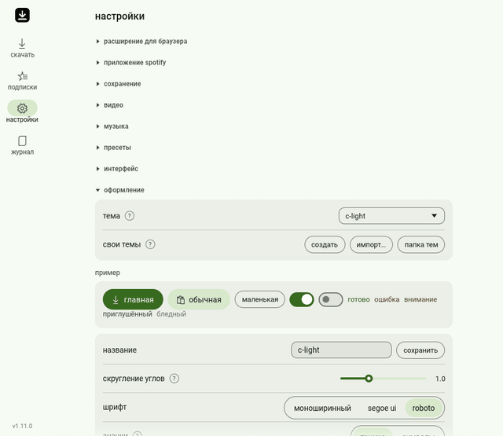
Любое поле, указанное в файле явно (например, "accent" или "layout"), перекрывает выведенное из seed. После сохранения из программы в файле появится "scheme" — все роли Material 3; их можно править вручную.
7. Как поделиться темой
- Тема — один файл. В программе: выберите свою тему → «экспорт…» → сохраните, например, на рабочий стол и отправьте.
- Друг нажимает «импорт…» и выбирает файл — тема добавляется в папку тем и сразу включается. Или просто кладёт файл в папку тем.
- Если в теме есть картинка фона (
background_image), отправьте и её PNG-файл: его нужно положить в папку тем рядом с темой, под тем же именем. Без картинки тема всё равно откроется — просто без неё. - Шрифты Roboto и Segoe UI берутся из Windows; если Roboto нет — будет Segoe UI.
8. Частые ошибки и как вернуть тёмную
Если в файле опечатка, тема не появится в списке, а под списком тем будет написано, в каком файле и в какой строке ошибка:
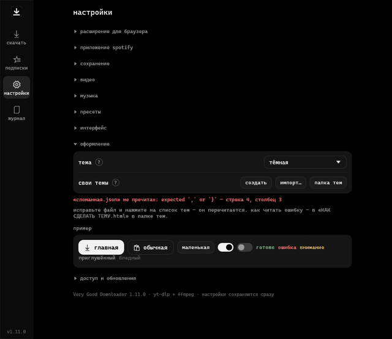
Как читать сообщение: expected `,` or `}` — строка 4, столбец 3 — «в строке 4 ожидалась запятая или закрывающая скобка». Обычно ошибка — в конце предыдущей строки.
| что видно | в чём дело |
|---|---|
expected `,` or `}` | пропущена запятая между полями (в конце предыдущей строки) |
trailing comma | лишняя запятая после последнего поля перед } |
цвет «…» — нужно #rrggbb | цвет записан не так: нужно "#1a2b3c" — с решёткой и в кавычках |
key must be a string | имя поля без кавычек: нужно "accent", а не accent |
invalid type: string "1.5", expected f32 | число в кавычках: нужно 1.5 без кавычек |
| тема не меняется | поле nav, cards и т. п. стоит не внутри "layout": { … }, или в значении опечатка — неизвестные значения заменяются на обычные |
| пропала картинка фона | файл не в папке тем, не PNG или имя с папкой ("C:\…") — нужно только имя файла |
Эта инструкция обновляется вместе с программой; ваши файлы тем при этом не трогаются.